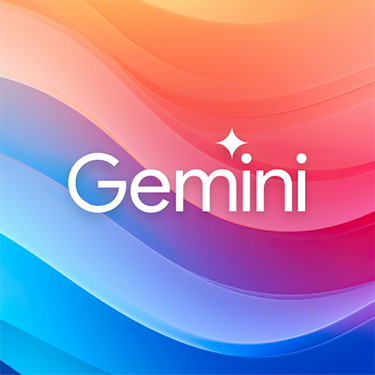
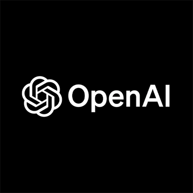
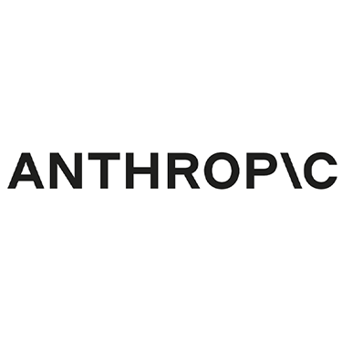

Pregled AI Alata

Google Gemini
Multimodalni AI model s naprednim mogućnostima razumijevanja teksta, slika i koda
Saznaj više
ChatGPT
Popularni konverzacijski AI model s naprednim razumijevanjem jezika i generiranjem teksta
Saznaj više
Anthropic Claude
Konverzacijski AI fokusiran na sigurnost i korisnost s dugim kontekstualnim prozorom
Saznaj višeU današnje vrijeme postoji niz naprednih AI alata koji se međusobno razlikuju po mogućnostima i specijalizacijama. Na ovoj stranici prikazana je usporedba tri trenutno najistaknutija sustava: Google Gemini, OpenAI ChatGPT i Anthropic Claude. Svaki od njih ima svoje prednosti kada je riječ o razumijevanju teksta, obradi slika i programiranju. Google Gemini ističe se po iznimno snažnoj obradi slika i visokom stupnju razumijevanja jezika, što ga čini odličnim izborom za multimodalne zadatke. OpenAI ChatGPT je svestran alat poznat po prirodnom razgovoru i kvalitetnoj podršci za kodiranje, idealan za kreativan i analitički rad. Anthropic Claude nudi stabilne i sigurnosno usmjerene odgovore, s velikim naglaskom na razumijevanje konteksta i korisničku etiku. Ova usporedba omogućuje korisnicima lakši odabir alata koji najbolje odgovara njihovim potrebama – bilo da se radi o učenju, profesionalnoj primjeni ili istraživanju.
Umjetna inteligencija danas igra ključnu ulogu u oblikovanju digitalne budućnosti. Njezina moć proizlazi iz sposobnosti da brzo analizira ogromne količine informacija, otkrije obrasce i donosi inteligentne odluke u stvarnom vremenu. AI alati, poput generativnih modela ChatGPT-a i Google Geminija, omogućuju stvaranje sadržaja, uključujući tekst i slike, dok specijalizirani sustavi pomažu u preciznoj dijagnostici, optimizaciji prometa i prilagođenom učenju. Njihova primjena sve je šira – od sustava preporuka i chatbotova do prepoznavanja glasa i vizualnih elemenata, kao i složenih prediktivnih modela u sektorima poput financija, maloprodaje i logistike. Iako koristi umjetne inteligencije postaju sve očitije, važno je istovremeno razmatrati pitanja etike, privatnosti i sigurnosti. Bez obzira na izazove, AI nastavlja napredovati velikom brzinom, potičući inovacije koje oblikuju naš svakodnevni život i način razmišljanja.
Pitanja o umjetnoj inteligenciji
| Pitanje | Odgovor |
|---|---|
| Koje su razlike između Gemini, ChatGPT i Claude AI alata? | Gemini odlikuje multimodalna sposobnost koja integrira tekst, slike i zvuk. ChatGPT je poznat po razumijevanju i generiranju prirodnog jezika i rješavanju širokog spektra zadataka. Claude se ističe dugim kontekstualnim prozorom i fokusiranjem na sigurnost i etiku u generiranim odgovorima. |
| Koje su prednosti korištenja različitih AI alata? | Korištenje različitih AI alata omogućuje optimizaciju za specifične zadatke - Gemini za multimedijalne sadržaje, ChatGPT za kreativne i različite zadatke, Claude za dugačke dokumente. Svaki alat ima svoje jedinstvene prednosti koje se mogu koristiti za različite primjene. |
| Kako odabrati pravi AI alat za svoje potrebe? | Odabir ovisi o specifičnim potrebama: za svakodnevne razgovore i kreativne zadatke, ChatGPT je odlična opcija; za kreativne zadatke s više tipova medija, Gemini je dobar izbor; za detaljnu analizu dugačkih tekstova i etički sigurnije odgovore, Claude pruža najbolje rezultate. |
| Kakve su mogućnosti integracije ovih AI alata? | Svi navedeni alati nude API pristup za integraciju u vlastite aplikacije i servise. Gemini i Claude imaju robusne API-je za različite platforme, dok ChatGPT ima dobro dokumentirani API koji koriste milijuni developera širom svijeta. |
| Koji su trendovi razvoja ovih AI alata? | Trendovi uključuju veće kontekstualne prozore za pamćenje informacija, bolju multimodalnu sposobnost (rad s tekstom, slikama, audio i video), napredniju logiku rasuđivanja i specijalizaciju za specifične domene poput programiranja, medicine ili obrazovanja. |
Google Gemini - mogućnosti i primjene
Google Gemini dolazi u tri verzije: Ultra, Pro i Nano. Najveći model, Gemini Ultra, nadmašio je ljudske stručnjake na masivnom multidisciplinarnom testu sposobnosti (MMLU), postižući rezultat od 90.0%. Gemini je multimodalan, što znači da može razumjeti i raditi s različitim vrstama informacija - tekst, slike, audio, video i kod. Ova svestranost čini ga idealnim za kreativne projekte, analizu podataka i svakodnevne zadatke koji kombiniraju različite formate.
ChatGPT - svestrani konverzacijski asistent
ChatGPT je konverzacijski AI model razvijen od strane OpenAI-a koji je postao poznat po svojoj sposobnosti razumijevanja i generiranja prirodnog jezika. Može odgovarati na pitanja, pisati kreativne tekstove, pomoći u programiranju, prevođenju, i rezoniranju. ChatGPT je treniran na ogromnoj količini teksta s interneta, što mu daje široko znanje o raznim temama. Najnovije verzije poput GPT-4 imaju poboljšane sposobnosti rasuđivanja, mogu analizirati slike i imaju kontekstualni prozor od 128,000 tokena (oko 100,000 riječi), što omogućuje detaljnu analizu dugačkih tekstova i složene razgovore.
Claude - fokus na sigurnost i dugi kontekst
Anthropic Claude se ističe po svom fokusu na sigurnost, korisnost i smanjenje štetnog ponašanja AI sustava. Claude ima sposobnost razumijevanja i obrade do 100,000 tokena (otprilike 75,000 riječi) u jednom upitu, što ga čini idealnim za analizu dugih dokumenata, knjiga ili detaljnih istraživanja. Claude je također treniran da bude "ustavni AI", što znači da slijedi specifični skup principa dizajniranih za etičke i sigurne interakcije, posebno za osjetljive teme.
Usporedba performansi AI alata
Svaki od ovih alata ima različite prednosti ovisno o zadatku. U benchmarku GSM8K (matematičko rezoniranje), Gemini Ultra postiže 94.4%, dok Claude 2 postiže 88.0%. Za svakodnevnu upotrebu, ChatGPT je popularan zbog svoje pristupačnosti i svestranosti. Za razumijevanje prirodnog jezika, Claude pruža dublje i nijansirane odgovore, posebno za dugačke kontekste. Gemini ima najbolje sposobnosti u radu s slikama i drugim medijima. Ovi alati se konstantno unapređuju, pa se i njihove relativne prednosti mijenjaju.
Budućnost AI alata
U bliskoj budućnosti, očekuje se da će ovi AI alati razviti još bolje mogućnosti rezoniranja, veće razumijevanje konteksta i sposobnost rješavanja složenijih problema. Također, naglasak će biti na boljoj integraciji s drugim sustavima i alatima, smanjenju energetskih potreba i pristupačnosti za širi krug korisnika. Ključni izazov ostaje balansiranje između moćnih sposobnosti i etičkih principa, posebno u područjima privatnosti, sigurnosti i transparentnosti.